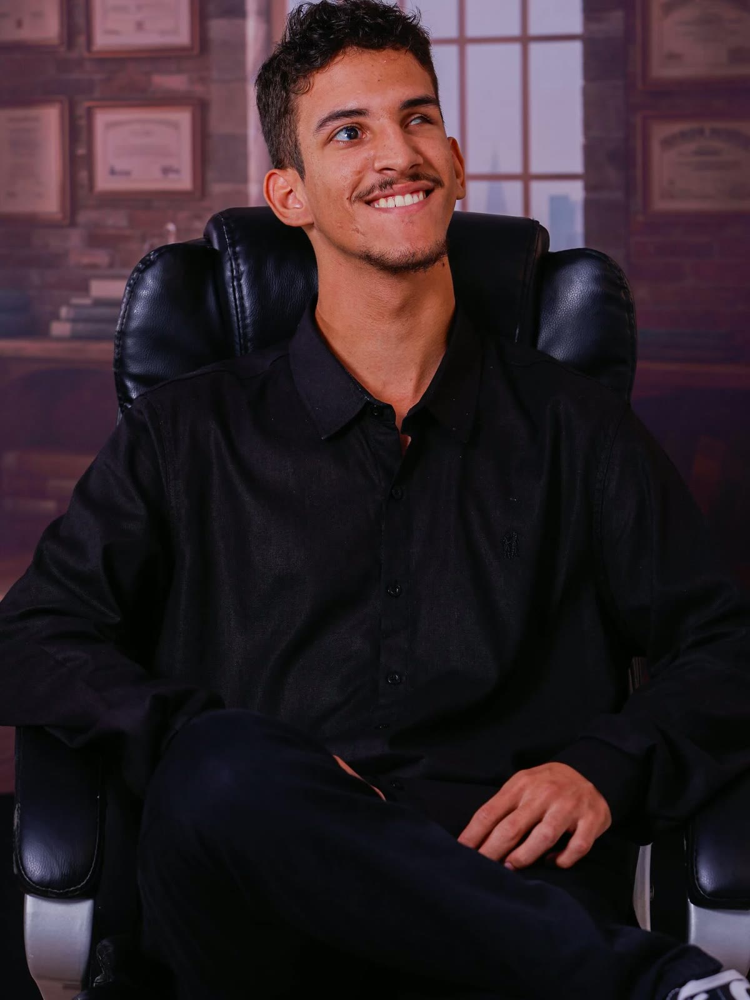
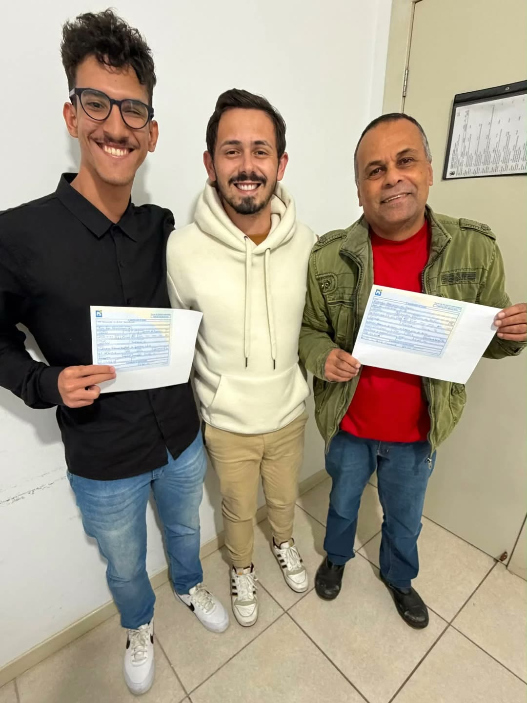

Saúde sem fila. Escola digna.
Capivari para todos.
Trabalhou na Câmara, viu de perto o que o povo enfrenta e decidiu que não dá mais para só assistir.

Foi o que Murilo encontrou quando trabalhava na Câmara: cerca de 800 pessoas na fila de um único atendimento. Por trás de cada número tem alguém com dor, sem poder trabalhar, esperando uma ligação que não chega.

"Eu trabalhei na Câmara e vi de perto. Tem muita fila de espera, poucos exames, escolas em situação precária."
— Murilo Machado
Murilo conhece o poder público por dentro. Na Câmara de Capivari de Baixo, viu como os pedidos da população chegam e como muitos ficam parados.
Agora quer usar essa experiência para cobrar, fiscalizar e propor soluções para o que mais pesa na vida das famílias: a saúde, a escola dos filhos e a inclusão das pessoas com deficiência.
Três causas escolhidas por quem viu de perto onde a cidade mais falha com o seu povo.
Filas enormes, poucos exames e postos de saúde que não dão conta. Quem precisa espera meses, às vezes anos.
Fila transparente: cada morador sabe sua posição e o tempo de espera.
Mutirões de exames e de fisioterapia para zerar as filas mais longas.
Fiscalização permanente dos postos de saúde do município.
Escolas em situação precária, sem estrutura para quem ensina e para quem aprende. Nossas crianças merecem mais.
Levantamento de cada escola: estrutura, merenda e segurança.
Prioridade de reforma para as unidades em pior estado.
Valorização de professores e funcionários da educação.
Acesso de verdade na saúde, na escola, na rua e nos espaços de decisão. Inclusão não pode ficar só no discurso.
Atendimento prioritário que funcione na rede de saúde.
Calçadas, prédios públicos e transporte acessíveis.
Voz das pessoas com deficiência nas decisões da cidade.
Projetos em construção, feitos ouvindo a população de Capivari de Baixo.
Conversas nos bairros, nas escolas e nos postos de saúde de Capivari.
Cobrar com dados: quantos esperam, há quanto tempo e por quê.
Transformar cada problema em projeto concreto e possível.
Mostrar publicamente cada passo dado.
Conte o que você enfrenta na saúde, na escola ou na acessibilidade do seu bairro. Sua história vai ajudar a construir as propostas para Capivari de Baixo.